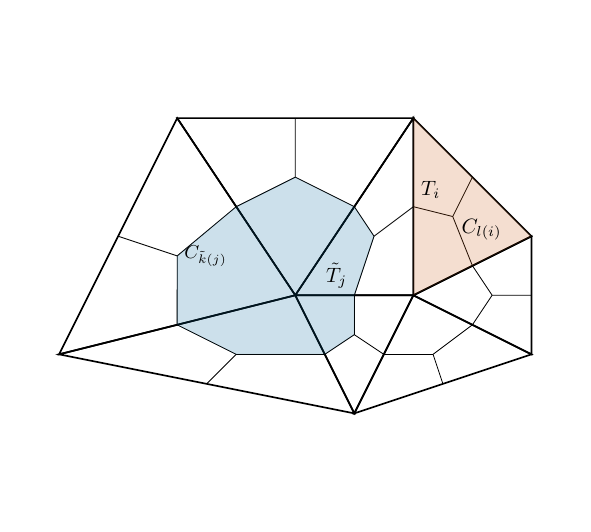
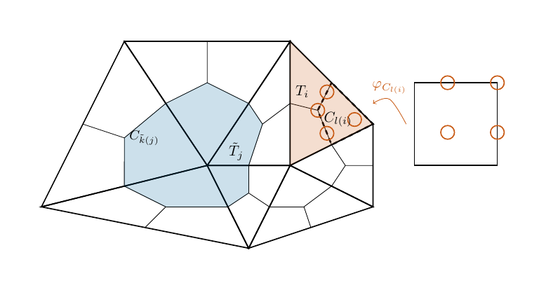
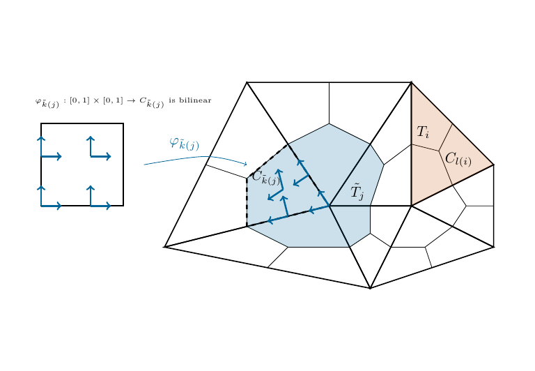
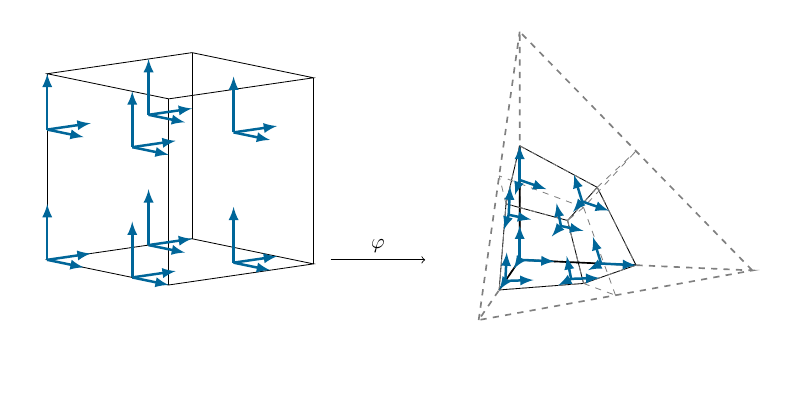

2.3. Discrete spaces on dual cells#
In this section we start from a given decomposition of \(\Omega\) into finite subdomains \(T\)
Usually \(\mathcal T\) consists of triangles or tetrahedra.
Barycentric mesh refinement in 2d#
To generalize the approach from Section 2.2 we use barycentric mesh refinement. Thereby the barycenter of each primal element is connected to the midpoints of the element edges to create quadrilateral cells.
The dual elements are composed of all quadrilateral cells that share a vertex of the primal mesh. Thus we end up with the following
For a triangular mesh each primal triangle is split up into three quadrilaterals.
The number of cells composing a dual element depends on the number of elements that share the vertex which becomes the dual element’s center.


Fig. 2.5 Primal (red) and dual (blue) elements in the triangular grid.#
Mapped basis functions#
For each cell \(C\) there exists a unique bilinear mapping \(\varphi_C:[0,1]^2\to \bar C\) such that \((0,0)\) is mapped into the vertex of the primal mesh. We use these mappings to construct our basis functions in the following way.
The space \(X_P^{\mathrm{grad}}(\mathcal T)\)#
For given nodes \(\hat x_0,\ldots,\hat x_P=1\) on the unit interval \([0,1]\) we use the tensorized nodes \(\hat {\mathbf x_{i,j}}=(xi,xj)^\top\) to generate the nodal basis of polynomials \(\hat l_{i,j}\in \hat {\mathcal Q}_P\) on the unit square with respect to the nodes \(\hat{\mathbf x}_{i,j}\). I.e., the functions \(\hat l_{i,j}\) fulfill
We remap them onto each cell \(C\) via the mapping \(\varphi_C\), i.e.,
for \(\mathbf x\in C\). To obtain a locally conforming space on each primal element \(T\) we identify basis functions on neighbouring cells (in the same primal element) which share an integration point on the cell boundary.


Fig. 2.6 Mapping of the unit square into the cell for the construction of the primal space.#
The global space \(X_P^{\mathrm{grad}}(\mathcal T)\) is constructed by setting the local basis functions to zero outside of their support (one, two or three cells).
In NGSolve the space \(X_P^{\mathrm{grad}}\) can be obtained as follows:
First we import NGSolve, the dualcellspaces package and the webgui Draw command
from ngsolve import *
import dualcellspaces as dcs
from ngsolve.webgui import Draw
Next we define the space on a simple mesh.
mesh = Mesh(unit_square.GenerateMesh())
h1 = dcs.H1PrimalCells(mesh,order = 1)
print("number of elements in mesh: ", mesh.ne)
print("number of dofs per element: ", int(h1.ndof/mesh.ne))
number of elements in mesh: 2
number of dofs per element: 7
We may take a look at the basis functions:
gfu = GridFunction(h1,multidim = h1.ndof)
for i in range(h1.ndof):
gfu.vecs[i][i] = 0.2
Draw(gfu, animate = True, min = 0, max = 0.2, intpoints = dcs.GetWebGuiPoints(2),order = 2, deformation = True, euler_angles =[-45,-6,25]);
The space \(\tilde X_P^{\mathrm{curl}}(\tilde{\mathcal T})\)#
Again we use nodes (differing from the ones in the construction of the previous spaces) \(0=\hat x_0,\ldots,\hat x_P\) on the unit interval \([0,1]\) and the respective tensorized nodes \(\hat {\mathbf x_{i,j}}=(xi,xj)^\top\) to generate the nodal basis of polynomials \(\hat l_{i,j}\in \hat {\mathcal Q}_P\) on the unit square.
This time we define the vectorial basis functions on the unit_square by
where \(\mathbf e_0,\mathbf e_1\) are the canonical basis vectors.
To obtain a conforming basis in each dual element (i.e., tangentially continuous) this time we have to use the correct covariant transformation and again identify the basis functions of neighbouring cells sharing a node on the boundary and pointing in direction of the boundary (on the unit square). I.e., if \(\mathbf F_C\) is the Jacobian matrix of the mapping \(\varphi_C\) we define
for \(\mathbf x\in C\).


Fig. 2.7 Mapping of the unit square into the cell for the construction of the primal space.#
Again the global space is constructed from the local ones by setting the basis functions outside of their domain of definition to zero.
In NGSolve the space \(\tilde X_P^{\mathrm{curl}}\) can be obtained as follows:
To see a whole dual element we define mesh with slightly more primal elements
mesh_curl = Mesh(unit_square.GenerateMesh(maxh=0.435))
hcurl = dcs.HCurlDualCells(mesh_curl,order = 0)
print("number of (primal) elements in mesh: ", mesh_curl.ne)
print("number of dofs per element: ", hcurl.ndof/mesh_curl.ne)
number of (primal) elements in mesh: 14
number of dofs per element: 3.5714285714285716
### Summery of the construction
1. Barycentric mesh refinement: each triangular primal element is decomposed into three cells. Dual elements contain all cells sharing one vertex.
2. The basis functions are constructed on the reference square $[0,1]^2$
3. The basis functions are transformed to the physical cells via the bilinear mapping with covariant transformations
4. Basis functions sharing a tangential trace on an inner edge (of the primal/dual element) are identified to generate locally conforming spaces
5. The global spaces are constructed from the local basis functions with zero extensions
## Generalization to three dimensions
For $\mathbb R^3$ and a tetrahedral mesh the same ideas as in two dimensions are used. We construct our spaces and basis by the same steps as in 2d, only minor generalizations are required:
1. Barycentric mesh refinement: each tetrahedral primal element is decomposed into four hexahedral cells. Again dual elements consist of all cells sharing one vertex.
2. The basis functions are constructed on the reference cube $[0,1]^3$
3. The basis functions are transformed to the physical cells via the trilinear mapping with covariant transformations
4. Basis functions sharing a tangential trace on an inner edge (of the primal/dual element) are identified to generate locally conforming spaces
5. The global spaces are constructed from the local basis functions with zero extensions
```{figure} ../images/hcurl3dprimal.png
---
height: 300px
name: hcurl3dprimal
---
Mapping of the unit cube into the cell for the construction of the primal space.


Fig. 2.8 Mapping of the unit cube into the cell for the construction of the dual space.#
We call the global discrete spaces of order \(P\) which are conforming on the primal and dual elements respectively \(X^{\mathrm{curl}}_P(\mathcal T)\) and \(\tilde X^{\mathrm{curl}}_P(\tilde{\mathcal T})\) The three dimensional semidiscrete weak formulation can be written down as the problem to find \(\mathbf E:[0,T]\to \tilde X^{\mathrm{curl}}_P(\tilde{\mathcal T})\) and \(\mathbf H:[0,T]\to X^{\mathrm{curl}}_P(\mathcal T)\)
The three-dimensional discrete spaces are implemented in NgSolve similar to the two dimensional ones. Visualizing basis functions is not as pleasant in three dimensions, but we may check that the number of basis functions is correct.
By the construction above the primal discrete space has \(P+1\) basis functions per inner edge \(2(P+1)^2-2(P+1)=2(P+1)P\) per inner face and \(3P^3+3P^2\) per cell. Since each primal element has \(4\) inner edges, \(6\) inner faces and \(4\) cells we obtain
We verify that this holds for the implementation:
mesh = Mesh(unit_cube.GenerateMesh())
print("number of elements = {}".format(mesh.ne))
for order in range(5):
print("###P = {}".format(order))
print("ndof = {}".format(dcs.HCurlPrimalCells(mesh,order=order).ndof))
print("{} * 4*(3*P^3+6*P^2+4*P+1)={}".format(mesh.ne,mesh.ne*4*(3*order**3+6*order**2+4*order+1)))
number of elements = 12
###P = 0
ndof = 48
12 * 4*(3*P^3+6*P^2+4*P+1)=48
###P = 1
ndof = 672
12 * 4*(3*P^3+6*P^2+4*P+1)=672
###P = 2
ndof = 2736
12 * 4*(3*P^3+6*P^2+4*P+1)=2736
###P = 3
ndof = 7104
12 * 4*(3*P^3+6*P^2+4*P+1)=7104
###P = 4
ndof = 14640
12 * 4*(3*P^3+6*P^2+4*P+1)=14640
A similar count can be done for the dual space \(\tilde X_P^{\mathrm{curl}}(\tilde {\mathcal T})\): Again we have \(P+1\) basis functions per inner edge \(2(P+1)P\) per inner face and \(3P^2(P+1)\) per cell. Globally we have \(2\) inner edges per edge of the primal mesh, \(3\) inner faces per face of the primal mesh and \(4\) cells per element of the primal mesh, i.e.,
Again we verify that this holds for the implementation:
print("number of elements = {}".format(mesh.ne))
for order in range(5):
print("###P = {}".format(order))
print("ndof = {}".format(dcs.HCurlDualCells(mesh,order=order).ndof))
print("2*nedges*(P+1)+6*nfaces*P*(P+1)+12*nelements*P^2(P+1)={}".format(2*mesh.nedge*(order+1)+6*mesh.nface*(order+1)*order+12*mesh.ne*order**2*(order+1)))
number of elements = 12
###P = 0
ndof = 52
2*nedges*(P+1)+6*nfaces*P*(P+1)+12*nelements*P^2(P+1)=52
###P = 1
ndof = 752
2*nedges*(P+1)+6*nfaces*P*(P+1)+12*nelements*P^2(P+1)=752
###P = 2
ndof = 2964
2*nedges*(P+1)+6*nfaces*P*(P+1)+12*nelements*P^2(P+1)=2964
###P = 3
ndof = 7552
2*nedges*(P+1)+6*nfaces*P*(P+1)+12*nelements*P^2(P+1)=7552
###P = 4
ndof = 15380
2*nedges*(P+1)+6*nfaces*P*(P+1)+12*nelements*P^2(P+1)=15380